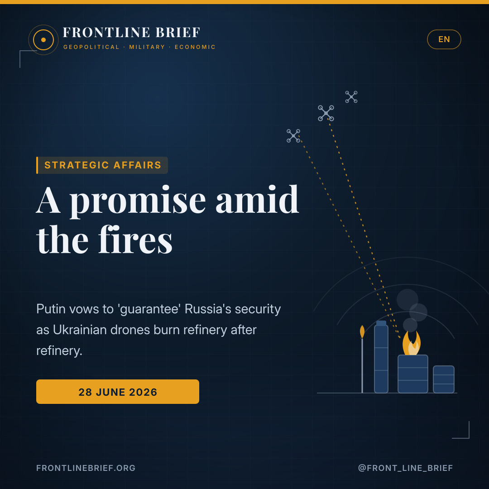
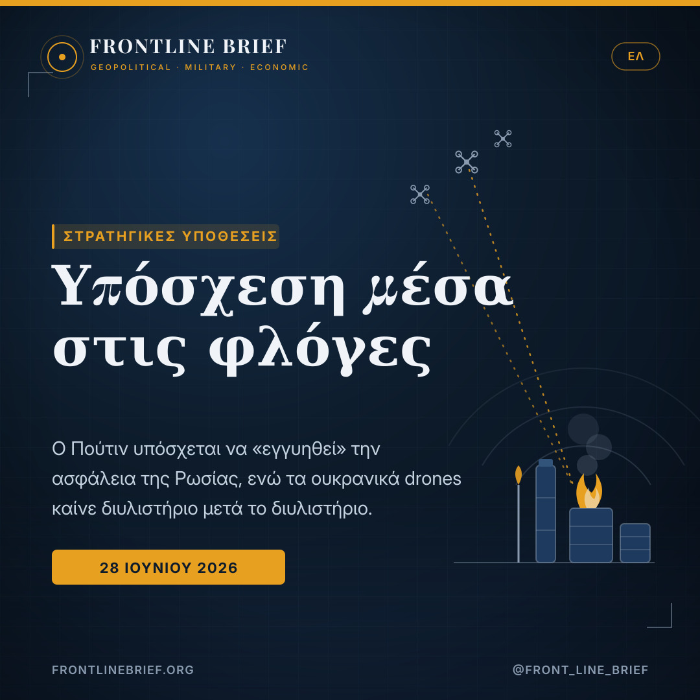
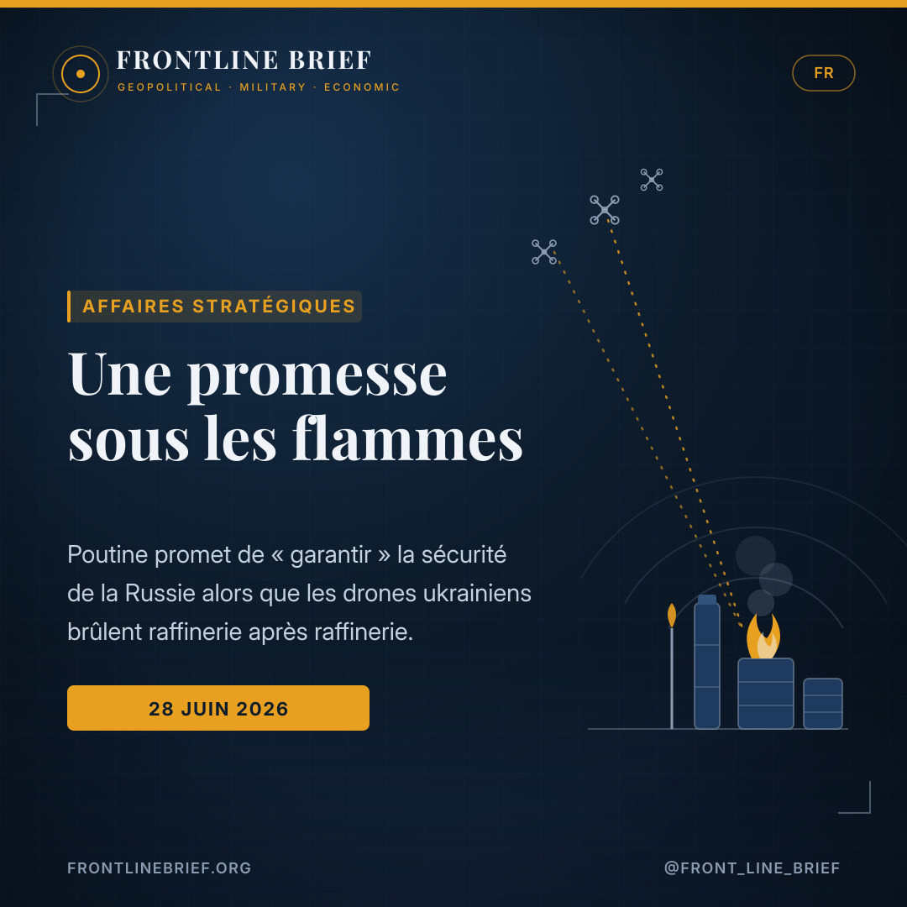
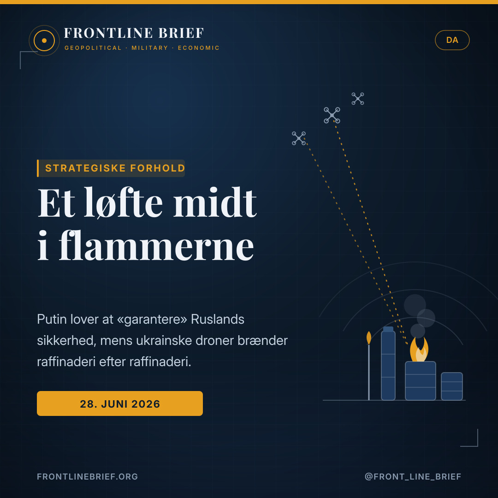
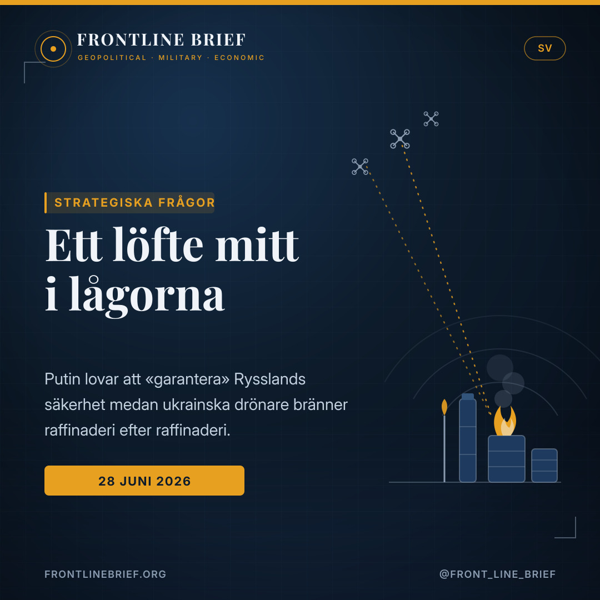

A promise amid the fires: Putin vows to guarantee Russia's security as Ukraine's drones keep burning its refineries
At his party's congress, Vladimir Putin pledged to "guarantee" the security of Russia and its citizens. The promise landed the same day Ukrainian drones set another refinery ablaze — a reminder of how far Kyiv's deep-strike campaign has reached inside the country.





A pledge before the vote
Speaking at the ruling party's congress, ahead of September's parliamentary elections, Putin admitted Russia is in a difficult period but vowed to guarantee the security of the country and its citizens, and to meet every challenge — including what he called terrorist attacks on Russian territory and infrastructure.
Hours before he spoke
A "massive" Ukrainian drone raid had just set the large Slavyansk refinery in the Krasnodar region alight; on 18 June a big refinery near Moscow was hit. On Friday, annexed Crimea was placed under a state of emergency, with fuel sales suspended and power cuts.
Choking the war's fuel
Kyiv's drone-and-missile campaign targets the hydrocarbon revenue that funds Russia's war, retaliation for the bombing of Ukraine since February 2022. Zelensky frames each strike as fewer resources for the war machine. US-mediated peace efforts remain, for now, without result.
A promise to a party congress
Vladimir Putin used the stage of his ruling party's congress to offer reassurance. Addressing United Russia ahead of September's parliamentary elections, he acknowledged that the country is passing through a difficult period — but argued it had taught important lessons, and pledged that the state would deliver. "We will undoubtedly guarantee the security of the country and our citizens," he said, according to Russian state media, promising to meet every challenge, including what he described as terrorist attacks on Russian territory and infrastructure.
The fires he was answering
The context for that promise was unusually literal. Only hours before he spoke, a wave of Ukrainian drones struck the Krasnodar region of south-western Russia, setting alight the large Slavyansk refinery on the Kuban. It was no isolated event: on 18 June a major refinery near Moscow had been hit, part of a campaign that in recent weeks has sharply intensified against Russian energy sites in particular.
Long-range sanctions
Kyiv's purpose is economic as much as military. By sending drones and missiles hundreds of kilometres into Russia to burn refineries and fuel depots, Ukraine aims to choke the hydrocarbon revenue that bankrolls Moscow's war — a campaign President Zelensky casts as both fewer resources for the war machine and a step towards peace, and as retaliation for the bombardment Ukraine has endured since February 2022. It is a deliberate inversion: the side with less mass trying to win by attrition of the other's economy.
The promise to "guarantee" security landed the same day a refinery burned in Krasnodar — the gap between the reassurance and the smoke is the story.
Crimea under emergency
The strain is now visible in territory Russia treats as its own. On Friday, Crimea — annexed in 2014 — was placed under a state of emergency after repeated Ukrainian strikes, with fuel sales to the public suspended and power cuts reported. Queues at filling stations and rationed petrol are exactly the kind of everyday disruption that a promise of guaranteed security is meant to dispel, and exactly the kind that is hardest to hide.
The diplomacy that isn't moving
Behind the rhetoric, the search for an exit is stalled. US-mediated efforts to end the war — the bloodiest in Europe since the Second World War — have so far produced no breakthrough. That leaves both leaders speaking past each other through results on the ground: one promising security to a domestic audience, the other promising to make the war unaffordable. Until the diplomacy moves, the refineries are likely to keep burning, and the promises to keep coming.
Μια υπόσχεση σε συνέδριο κόμματος
Ο Βλαντίμιρ Πούτιν χρησιμοποίησε το βήμα του συνεδρίου του κυβερνώντος κόμματος για να καθησυχάσει. Μιλώντας στην Ενωμένη Ρωσία ενόψει των βουλευτικών εκλογών του Σεπτεμβρίου, παραδέχθηκε ότι η χώρα διέρχεται μια δύσκολη περίοδο — υποστήριξε όμως ότι του έχει προσφέρει σημαντικά μαθήματα, και δεσμεύτηκε ότι το κράτος θα ανταποκριθεί. «Θα εγγυηθούμε αναμφίβολα την ασφάλεια της χώρας και των πολιτών μας», δήλωσε σύμφωνα με ρωσικά κρατικά μέσα, υποσχόμενος να αντιμετωπίσει κάθε πρόκληση, συμπεριλαμβανομένων όσων χαρακτήρισε τρομοκρατικές επιθέσεις κατά του ρωσικού εδάφους και των υποδομών.
Οι φωτιές στις οποίες απαντούσε
Το πλαίσιο αυτής της υπόσχεσης ήταν ασυνήθιστα κυριολεκτικό. Λίγες μόλις ώρες πριν μιλήσει, κύμα ουκρανικών drones έπληξε την περιοχή Κρασνοντάρ της νοτιοδυτικής Ρωσίας, βάζοντας φωτιά στο μεγάλο διυλιστήριο Σλαβιάνσκ επί του Κουμπάν. Δεν επρόκειτο για μεμονωμένο περιστατικό: στις 18 Ιουνίου είχε πληγεί μεγάλο διυλιστήριο κοντά στη Μόσχα, μέρος μιας εκστρατείας που τις τελευταίες εβδομάδες έχει ενταθεί δραστικά, ιδίως κατά ρωσικών ενεργειακών εγκαταστάσεων.
Κυρώσεις μεγάλου βεληνεκούς
Ο σκοπός του Κιέβου είναι οικονομικός όσο και στρατιωτικός. Στέλνοντας drones και πυραύλους εκατοντάδες χιλιόμετρα μέσα στη Ρωσία για να κάψει διυλιστήρια και αποθήκες καυσίμων, η Ουκρανία επιδιώκει να στραγγαλίσει τα έσοδα από τους υδρογονάνθρακες που χρηματοδοτούν τον πόλεμο της Μόσχας — μια εκστρατεία που ο πρόεδρος Ζελένσκι παρουσιάζει τόσο ως λιγότερους πόρους για την πολεμική μηχανή όσο και ως βήμα προς την ειρήνη, αλλά και ως αντίποινα για τους βομβαρδισμούς που υφίσταται η Ουκρανία από τον Φεβρουάριο του 2022. Είναι μια σκόπιμη αντιστροφή: η πλευρά με τη μικρότερη μάζα προσπαθεί να νικήσει με φθορά της οικονομίας της άλλης.
Η υπόσχεση να «εγγυηθεί» την ασφάλεια ήρθε την ίδια μέρα που ένα διυλιστήριο καιγόταν στο Κρασνοντάρ — το χάσμα ανάμεσα στον καθησυχασμό και στον καπνό είναι η ουσία.
Η Κριμαία σε κατάσταση έκτακτης ανάγκης
Η πίεση είναι πλέον ορατή σε έδαφος που η Ρωσία θεωρεί δικό της. Την Παρασκευή, η Κριμαία — προσαρτημένη από το 2014 — κηρύχθηκε σε κατάσταση έκτακτης ανάγκης μετά από επαναλαμβανόμενα ουκρανικά πλήγματα, με αναστολή της πώλησης καυσίμων στο κοινό και διακοπές ρεύματος. Ουρές στα πρατήρια και δελτίο στη βενζίνη είναι ακριβώς το είδος της καθημερινής διατάραξης που μια υπόσχεση εγγυημένης ασφάλειας υποτίθεται ότι διαλύει — και ακριβώς το είδος που είναι δυσκολότερο να κρυφτεί.
Η διπλωματία που δεν προχωρά
Πίσω από τη ρητορική, η αναζήτηση διεξόδου έχει κολλήσει. Οι προσπάθειες υπό αμερικανική μεσολάβηση να τερματιστεί ο πόλεμος — ο πιο αιματηρός στην Ευρώπη μετά τον Β΄ Παγκόσμιο Πόλεμο — δεν έχουν αποφέρει μέχρι στιγμής καμία τομή. Έτσι, οι δύο ηγέτες μιλούν ο ένας πάνω από τον άλλον μέσα από τα αποτελέσματα στο πεδίο: ο ένας υποσχόμενος ασφάλεια σε εσωτερικό ακροατήριο, ο άλλος υποσχόμενος να κάνει τον πόλεμο οικονομικά ασύμφορο. Μέχρι να κινηθεί η διπλωματία, τα διυλιστήρια μάλλον θα συνεχίσουν να καίγονται, και οι υποσχέσεις να δίνονται.
Une promesse à un congrès de parti
Vladimir Poutine a profité de la tribune du congrès de son parti au pouvoir pour rassurer. S'adressant à Russie unie à l'approche des élections législatives de septembre, il a reconnu que le pays traverse une période difficile — tout en affirmant qu'elle lui avait enseigné d'importantes leçons, et en promettant que l'État serait à la hauteur. « Nous garantirons sans aucun doute la sécurité du pays et de nos citoyens », a-t-il déclaré selon les médias d'État russes, promettant de relever chaque défi, y compris ce qu'il a qualifié d'attaques terroristes contre le territoire et les infrastructures de la Russie.
Les incendies auxquels il répondait
Le contexte de cette promesse était d'une littéralité inhabituelle. Quelques heures à peine avant son discours, une vague de drones ukrainiens a frappé la région de Krasnodar, dans le sud-ouest de la Russie, embrasant la grande raffinerie de Slaviansk sur le Kouban. Ce n'était pas un cas isolé : le 18 juin, une importante raffinerie près de Moscou avait été touchée, dans le cadre d'une campagne qui, ces dernières semaines, s'est intensifiée nettement, en particulier contre les sites énergétiques russes.
Des sanctions à longue portée
L'objectif de Kyiv est autant économique que militaire. En envoyant drones et missiles à des centaines de kilomètres en Russie pour brûler raffineries et dépôts de carburant, l'Ukraine cherche à étrangler les revenus des hydrocarbures qui financent la guerre de Moscou — une campagne que le président Zelensky présente à la fois comme moins de ressources pour la machine de guerre et comme un pas vers la paix, et comme une riposte aux bombardements que subit l'Ukraine depuis février 2022. C'est une inversion délibérée : le camp à la masse moindre tente de l'emporter par l'usure de l'économie de l'autre.
La promesse de « garantir » la sécurité est tombée le jour même où une raffinerie brûlait à Krasnodar — l'écart entre la réassurance et la fumée, voilà l'essentiel.
La Crimée en état d'urgence
La tension est désormais visible sur un territoire que la Russie traite comme le sien. Vendredi, la Crimée — annexée en 2014 — a été placée en état d'urgence après des frappes ukrainiennes répétées, avec suspension des ventes de carburant au public et coupures d'électricité. Files d'attente aux stations-service et essence rationnée : précisément le genre de perturbation quotidienne qu'une promesse de sécurité garantie est censée dissiper — et précisément le genre le plus difficile à cacher.
La diplomatie qui n'avance pas
Derrière la rhétorique, la recherche d'une issue est au point mort. Les efforts de médiation américaine pour mettre fin à la guerre — la plus meurtrière en Europe depuis la Seconde Guerre mondiale — n'ont pour l'instant produit aucune percée. Les deux dirigeants se parlent ainsi par-dessus l'épaule, à travers les résultats sur le terrain : l'un promettant la sécurité à un public intérieur, l'autre promettant de rendre la guerre insoutenable. Tant que la diplomatie n'avance pas, les raffineries continueront probablement de brûler, et les promesses de pleuvoir.
Et løfte til en partikongres
Vladimir Putin brugte talerstolen ved sit regeringspartis kongres til at berolige. Med ord til Forenet Rusland forud for parlamentsvalget i september erkendte han, at landet gennemgår en vanskelig periode — men hævdede, at den havde lært vigtige lektier, og lovede, at staten ville levere. »Vi vil uden tvivl garantere landets og vores borgeres sikkerhed«, sagde han ifølge russiske statsmedier og lovede at møde enhver udfordring, herunder hvad han kaldte terrorangreb mod russisk territorium og infrastruktur.
De brande, han svarede på
Konteksten for løftet var usædvanligt bogstavelig. Blot timer før han talte, ramte en bølge af ukrainske droner Krasnodar-regionen i det sydvestlige Rusland og satte det store Slavjansk-raffinaderi ved Kuban i brand. Det var ikke en enkeltstående hændelse: den 18. juni var et stort raffinaderi nær Moskva blevet ramt, som led i en kampagne, der i de seneste uger er intensiveret markant, især mod russiske energianlæg.
Langtrækkende sanktioner
Kyivs formål er lige så meget økonomisk som militært. Ved at sende droner og missiler hundreder af kilometer ind i Rusland for at brænde raffinaderier og brændstofdepoter søger Ukraine at kvæle de indtægter fra kulbrinter, der finansierer Moskvas krig — en kampagne, præsident Zelenskyj fremstiller både som færre ressourcer til krigsmaskinen og som et skridt mod fred, og som gengældelse for de bombardementer, Ukraine har udholdt siden februar 2022. Det er en bevidst omvending: den part med mindre masse forsøger at vinde ved at nedslide modpartens økonomi.
Løftet om at »garantere« sikkerheden faldt samme dag, et raffinaderi brændte i Krasnodar — kløften mellem beroligelsen og røgen er historien.
Krim i undtagelsestilstand
Presset er nu synligt på territorium, Rusland behandler som sit eget. Fredag blev Krim — annekteret i 2014 — sat i undtagelsestilstand efter gentagne ukrainske angreb, med suspension af brændstofsalg til offentligheden og strømafbrydelser. Køer ved tankstationer og rationeret benzin er præcis den slags dagligdags forstyrrelse, et løfte om garanteret sikkerhed skal fjerne — og præcis den slags, der er sværest at skjule.
Diplomatiet, der ikke rykker
Bag retorikken er søgen efter en udvej gået i stå. De amerikansk medierede bestræbelser på at afslutte krigen — den blodigste i Europa siden Anden Verdenskrig — har indtil videre ikke givet noget gennembrud. Det efterlader de to ledere talende forbi hinanden gennem resultaterne på jorden: den ene lover sikkerhed til et hjemligt publikum, den anden lover at gøre krigen uoverkommelig. Indtil diplomatiet rykker, vil raffinaderierne sandsynligvis blive ved med at brænde, og løfterne med at komme.
Ett löfte till en partikongress
Vladimir Putin använde talarstolen vid sitt regeringspartis kongress för att lugna. I ett tal till Enade Ryssland inför parlamentsvalet i september medgav han att landet går igenom en svår period — men hävdade att den lärt det viktiga läxor, och lovade att staten skulle leverera. »Vi kommer utan tvekan att garantera landets och våra medborgares säkerhet«, sade han enligt rysk statlig media och lovade att möta varje utmaning, inklusive vad han kallade terrorattacker mot ryskt territorium och infrastruktur.
Bränderna han svarade på
Sammanhanget för löftet var ovanligt bokstavligt. Bara timmar innan han talade träffade en våg av ukrainska drönare Krasnodarregionen i sydvästra Ryssland och satte det stora Slavjansk-raffinaderiet vid Kuban i brand. Det var ingen isolerad händelse: den 18 juni hade ett stort raffinaderi nära Moskva träffats, som del av en kampanj som de senaste veckorna intensifierats kraftigt, särskilt mot ryska energianläggningar.
Långräckviddiga sanktioner
Kyivs syfte är lika mycket ekonomiskt som militärt. Genom att sända drönare och robotar hundratals kilometer in i Ryssland för att bränna raffinaderier och bränsledepåer söker Ukraina strypa de intäkter från kolväten som finansierar Moskvas krig — en kampanj president Zelenskyj framställer både som mindre resurser till krigsmaskinen och som ett steg mot fred, och som vedergällning för de bombningar Ukraina utstått sedan februari 2022. Det är en avsiktlig omvändning: parten med mindre massa försöker vinna genom att nöta ner den andres ekonomi.
Löftet att »garantera« säkerheten kom samma dag som ett raffinaderi brann i Krasnodar — klyftan mellan lugnandet och röken är själva poängen.
Krim i undantagstillstånd
Pressen är nu synlig på territorium som Ryssland behandlar som sitt eget. På fredagen sattes Krim — annekterat 2014 — i undantagstillstånd efter upprepade ukrainska slag, med inställd bränsleförsäljning till allmänheten och strömavbrott. Köer vid bensinstationer och ransonerad bensin är precis den sortens vardagsstörning som ett löfte om garanterad säkerhet ska skingra — och precis den sort som är svårast att dölja.
Diplomatin som inte rör sig
Bakom retoriken har sökandet efter en utväg stannat av. De USA-medlade ansträngningarna att avsluta kriget — det blodigaste i Europa sedan andra världskriget — har hittills inte gett något genombrott. Det lämnar de två ledarna talande förbi varandra genom resultaten på marken: den ene lovar säkerhet till en inhemsk publik, den andre lovar att göra kriget ohållbart dyrt. Tills diplomatin rör sig kommer raffinaderierna sannolikt att fortsätta brinna, och löftena att fortsätta komma.
Sources
- OnAlert.gr — Ρωσία: Εν μέσω ουκρανικών επιδρομών ο Πούτιν υπόσχεται να «εγγυηθεί» την ασφάλεια της χώρας (Διονύσης Χατζημιχάλης, 28 June 2026)
- TASS — Putin's remarks at the United Russia congress
- Frontline Brief background — Ukraine's deep-strike refinery campaign, the Krasnodar/Slavyansk fire and Crimea's state of emergency